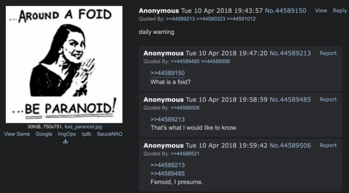

Slop Dictionary / foid
What Does Foid Mean?
Foid means woman in 4chan/incel slang. It is short for femoid and is the first half of foidslop.
Where did foid come from?
Foid is clipped from femoid. Know Your Meme documents an April 2018 use on 4chan’s /r9k/ board and lists 4chan as the origin of the shortened form.
The word stayed common in incel vocabulary, then spread much farther through screenshots, memes, ironic posting, and newer compounds.

An April 10, 2018 /r9k/ post, one of the earliest documented uses of “foid.”
Source: Know Your Meme image archiveTranscript
Around a foid, be paranoid.
Foid vs femoid
Femoid is the longer form. Foid is the four-letter version. Same root, less typing.
That shorter form is also easier to glue onto other words, which is how you end up with foidslop.
How is foid used now?
You still see it used seriously in incel and gender-war posting. You also see it quoted, memed, used ironically, or treated as a building block for newer slang.
The surrounding sentence usually makes the tone obvious. “Foids are ruining society” and “industrial-grade foidslop username” are not doing the same job.
Sources / receipts